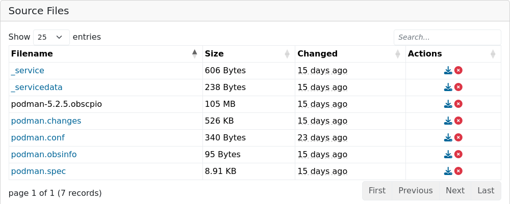

How openSUSE is built
From Source Code to an Installation Disk
who -u
Dan Čermák
| Software Developer @SUSE, SLE BCI Releng | |
| Developer Tools, Testing and Documentation, Home Automation | |
| https://dancermak.name | |
| dcermak | |
| @Defolos@mastodon.social |
Why even build a distribution?
Just pip/npm/cargo install everything!
$ pip3 install pysqlite3
...
Failed to build pysqlite3
Installing collected packages: pysqlite3
Running setup.py install for pysqlite3 ... error
error: subprocess-exited-with-error
× Running setup.py install for pysqlite3 did not run successfully.
oops 🫠
From Sources to an Installer
A long time ago…
$ cat INSTALL
BASIC INSTALLATION
On most Unix systems, you build Emacs by first running the
'configure' shell script. This attempts to deduce the
correct values for various system-dependent variables and
features, and find the directories where certain system
headers and libraries are kept. In a few cases, you may
need to explicitly tell configure where to find some things,
or what options to use.
Ain't no body got time for that (╯°□°）╯︵ ┻━┻

It starts with packages

RPM packages

You said Dependencies?

Dependency Hell 👿

The people behind this
Packaging Team
- update packages
- fix build issues
- backport bugfixes
Distribution Assembly

What's in a distribution?
- installation ISOs
- disk & container images
- binary packages
- repositories
Parts of a Build System

Repository Assembly

The Factory Process

The people behind this
Release Engineering
- review package submissions & assign to stagings
- review assembly & integration issues
- review tests & bugs
Build system

The people behind this
Buildservice and Buildops
- develop the build service
- run the infrastructure
Testing/QE

Test automation

The people behind this
QE & Test tooling Team
- implement test cases
- improve test automation
- review test runs
- verify bugfixes
- manual testing
Infrastructure
- run the infrastructure
- maintain automation
- moderation
Links

Questions?
Answers!